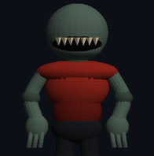
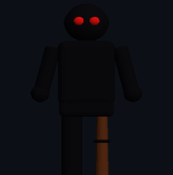
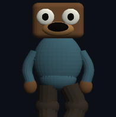

Cada animatrónico se frena de una forma distinta.



CUIDA LA BATERÍA: una compuerta cerrada todo el tiempo la agota en 50 segundos, y la noche dura más que eso. Ciérrala cuando la luz esté en rojo.